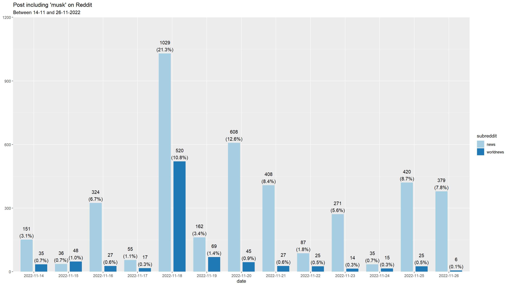

Showcase
Focus on 4CAT
Background
Ths showcase has two different goals:
- Exemplary presentation of the collection of
 Reddit data using the RedditExtractoR package
Reddit data using the RedditExtractoR package - Importing and analyzing the data collected with the 🐈🐈 4CAT 🐈🐈 tool.
You can also open this showcase in other interactive and executable environments: 

Data collection with RedditExtractor
Reddit Extractor is an R package for extracting data out of Reddit. It allows you to:
- find subreddits based on a search query
- find a user and their Reddit history
- find URLs to threads of interest and retrieve comments out of these threads
Unfortunately, the functions of the RedditExtractoR package can NOT be executed during the Markdown creation process and must be reproduced “live”.
Therefore, there will be no output for the next two paragraphs.
Example: Find subreddits
Similar to the example from the seminar, the function find_subreddits identifies all subreddits that contain the keyword news either in their name or in their attributes.
library(tidyverse)
library(RedditExtractoR)
# Get list of subreddits
news <- find_subreddits("news")
# Quick preview of the dataset
news %>% glimpse()
# Arrange subreddits by subscribers
news %>%
arrange(-subscribers) %>%
tibble() %>% head()Example: Find thread URLs
# Get list of top thread urls
news_top_urls <- find_thread_urls(
subreddit = "news",
sort_by = "top",
period = "month"
)
# Quick preview of dataset
news_top_urls %>% glimpse()
news_top_urls %>% tibble()Analysis of collected 🐈🐈 4CAT 🐈🐈 data
Data import from
# load packages
library(readr)
# get data from github
musk <- read_csv(
"https://raw.githubusercontent.com/chrdrn/dbd_binder/main/data/06-reddit/4cat-reddit_news-musk_complete.csv")
musk_entities <- read_csv(
"https://raw.githubusercontent.com/chrdrn/dbd_binder/main/data/06-reddit/4cat-reddit_news-musk-named_entities.csv")
# quick preview
musk %>% glimpse()Rows: 4,838
Columns: 16
$ thread_id <chr> "yugsz0", "yt59ku", "yulq2v", "yulq2v", "yulq2v", "yulq…
$ id <chr> "iw9mhr7", "iw9tzrz", "iwa0egr", "iwa10h3", "iwa1gry", …
$ timestamp <dttm> 2022-11-14 00:13:59, 2022-11-14 01:11:53, 2022-11-14 0…
$ body <chr> "Nick Cannon and Elon Musk need to put a damn condom on…
$ subject <lgl> NA, NA, NA, NA, NA, NA, NA, NA, NA, NA, NA, NA, NA, NA,…
$ author <chr> "fbe0d753750a9f008871e6e829b727bf26cc2bdcdc71f340", "89…
$ author_flair <chr> "aadb59c4da75af6c9fb8d5cb4c310ce59888aab7f96ffc15", "aa…
$ post_flair <lgl> NA, NA, NA, NA, NA, NA, NA, NA, NA, NA, NA, NA, NA, NA,…
$ domain <lgl> NA, NA, NA, NA, NA, NA, NA, NA, NA, NA, NA, NA, NA, NA,…
$ url <lgl> NA, NA, NA, NA, NA, NA, NA, NA, NA, NA, NA, NA, NA, NA,…
$ image_file <lgl> NA, NA, NA, NA, NA, NA, NA, NA, NA, NA, NA, NA, NA, NA,…
$ image_md5 <lgl> NA, NA, NA, NA, NA, NA, NA, NA, NA, NA, NA, NA, NA, NA,…
$ subreddit <chr> "worldnews", "news", "news", "news", "news", "news", "n…
$ parent <chr> "t3_yugsz0", "t1_iw4y0aj", "t3_yulq2v", "t3_yulq2v", "t…
$ score <dbl> 1, 1, 1, 1, 1, 1, 1, 1, 1, 1, 1, 1, 1, 1, 1, 1, 1, 1, 1…
$ unix_timestamp <dbl> 1668384839, 1668388313, 1668391383, 1668391676, 1668391…musk_entities %>% glimpse()Rows: 3,633
Columns: 3
$ word <chr> "musk", "twitter", "twitter", "elon musk", "tesla", "trump", "t…
$ entity <chr> "PERSON", "PERSON", "PRODUCT", "PRODUCT", "ORG", "ORG", "GPE", …
$ count <dbl> 1147, 861, 479, 404, 345, 273, 222, 218, 205, 187, 154, 132, 13…Messages including ‘musk’ over time
The following graphics (and especially their labels) may appear very small. To view the graphics in their original size, right-click on the images and select “Open image/graphic in new tab”.
Total
library(lubridate)
library(sjPlot)
# Display
musk %>%
mutate(date = as.factor(date(timestamp))) %>%
plot_frq(
date,
title = "Post including 'musk' on Reddit") +
labs(subtitle = "Subreddits 'news' & 'worldnews' between 14-11 and 26-11-2022")
By subreddit
library(magrittr)
musk %>%
mutate(
date = as.factor(date(timestamp)),
across(subreddit, as.factor)
) %$%
plot_grpfrq(
date,
subreddit,
title = "Post including 'musk' on Reddit") +
labs(subtitle = "Between 14-11 and 26-11-2022")